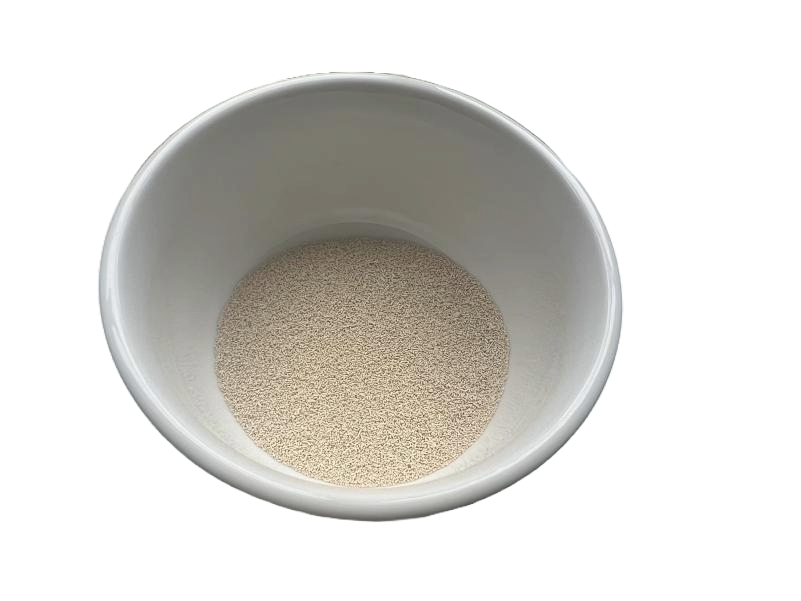
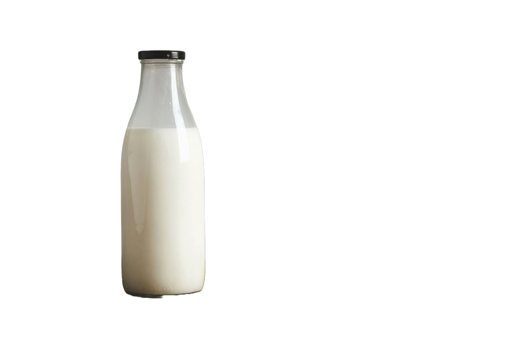
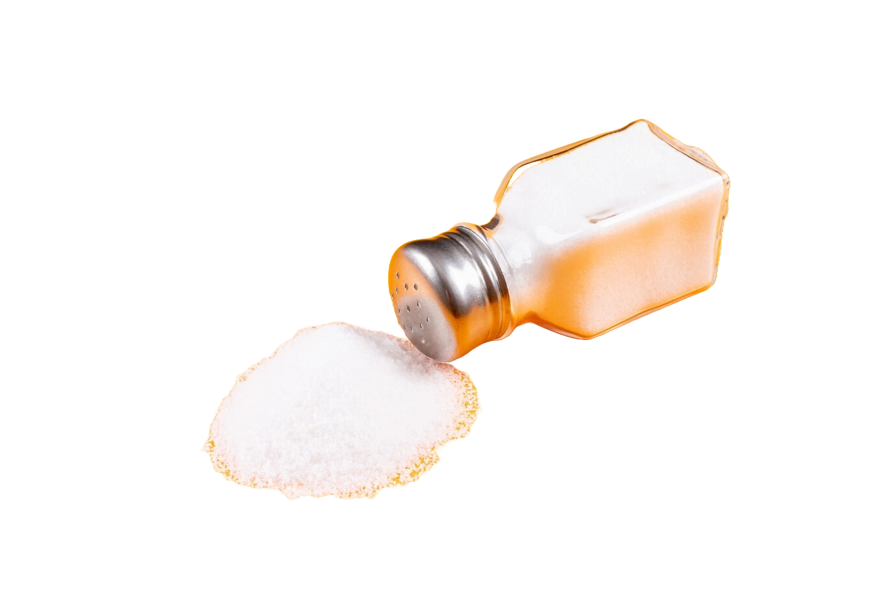
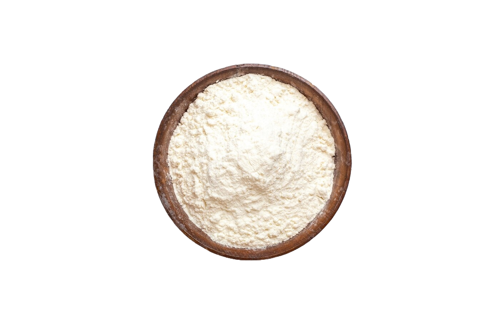
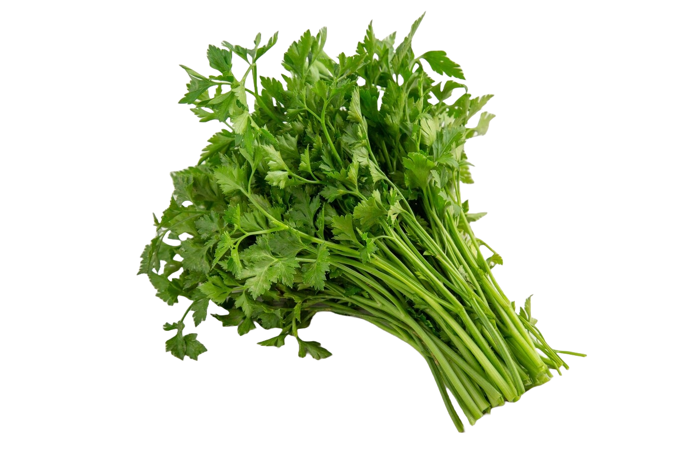
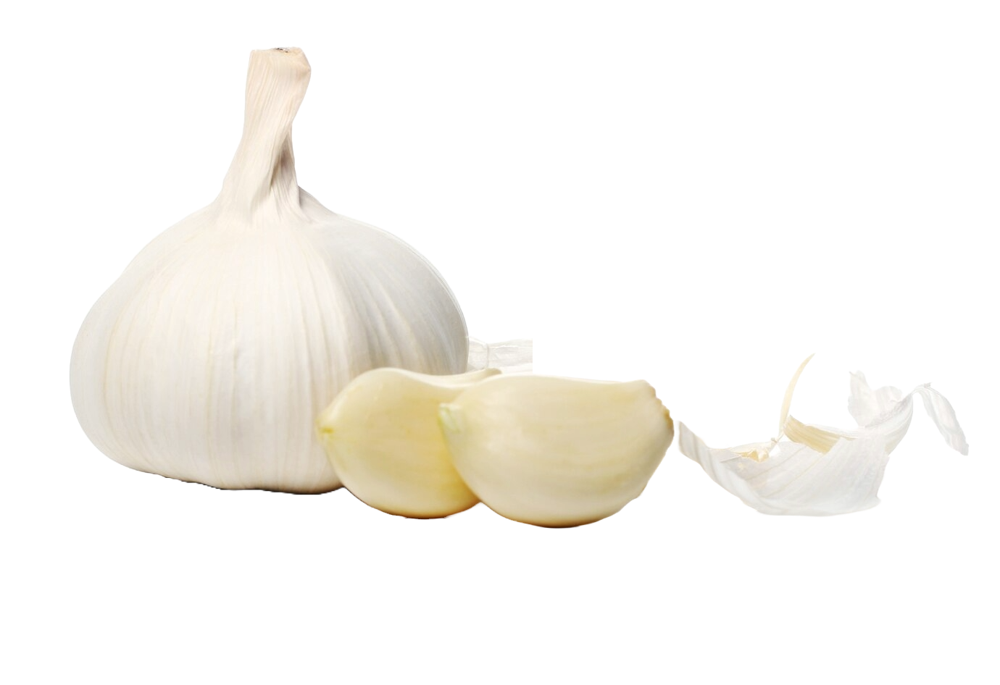

1/2 Cup of Water
1/2 Cup of Water

1 Teaspoon Active Yeast
 1 Tablespoon Unsalted Butter (Softened)
1 Tablespoon Unsalted Butter (Softened)

1/2 Cup of Milk

1 Teaspoon of Salt

3 Cups of Flour

Fresh Parsley

2 Cloves of Garlic
Ingredients
- 1/2 Cup of Water
- 1 Teaspoon Active Yeast
- 1 Tablespoon Sugar
- 1 Tablespoon Unsalted Butter
- 1/2 Cup of Milk
- 1 Teaspoon Salt
- 3 Cups of Flour
- 0.17 tablespoon dried oregano
Toppings
- Toppings
- 4 Tablespoons of Melted Butter
- Fresh Parsley
- 2 Cloves of Garlic